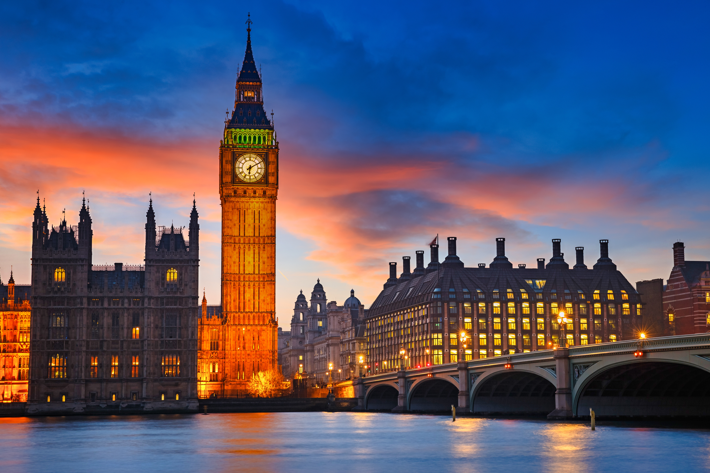
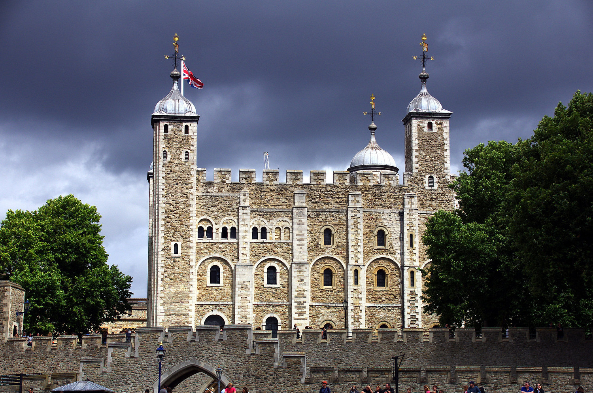

SUA PRÓXIMA VIAGEM:
Conheça Londres

A vibrante capital do Reino Unido é histórica e moderna ao mesmo tempo. Ela foi fundada pelos romanos, viu reinos e governos nascerem e morrerem, mudou muitas vezes ao longo dos séculos e foi o lar de artistas, escritores, gênios políticos e assassinos em série. Do Big Ben à Abadia de Westminster e aos grandes portões do Palácio de Buckingham, toda a história de Londres está concentrada em seus monumentos mais icônicos. Não quer perder nenhum deles, mas não sabe por onde começar? Venha conosco para os melhores planos e ideias do que fazer em Londres.
PARA QUEM GOSTA DE HISTÓRIAS:
Do Big Ben ao Palácio de Buckingham: as principais atrações de Londres
Londres é uma cidade cheia de contrastes, onde a modernidade de Piccadilly Circus, repleta de cinemas, teatros e enormes letreiros luminosos, se entrelaça com a solenidade da Torre de Londres ou a tranquilidade do Hyde Park. Quando você se afasta do centro, a cidade oferece bairros cheios de magia, como Camden Town, famoso por seu mercado alternativo, ou o East End, decorado com uma variedade infinita de arte de rua. Londres sabe como atender aos gostos de todos os turistas, porque é uma capital de mil tons, capaz de atrair tanto aqueles que buscam monumentos e história quanto aqueles que amam a modernidade e suas expressões artísticas.
No entanto, antes de se entregar ao lado mais contemporâneo da capital britânica, é essencial, em nossa opinião, visitar pelo menos um de seus monumentos mais icônicos. Símbolo do poder do Império Britânico, esses edifícios grandiosos e impressionantes contam as fases mais significativas da história do país. Eles não poderiam deixar de fazer parte do nosso Top 10 de visitas obrigatórias para fazer em Londres, todos acessíveis com os ingressos abaixo:

1. Torre de Londres
O Palácio e Fortaleza Real de Sua Majestade da Torre de Londres é um castelo histórico localizado na cidade de Londres, Inglaterra, Reino Unido, na margem norte do rio Tâmisa. Foi fundado por volta do final do ano de 1066 depois da conquista normanda da Inglaterra.

2. Tower Bridge
Tower Bridge ou simplesmente Ponte da Torre, é uma ponte-báscula construída sobre o rio Tâmisa, na cidade de Londres, capital do Reino Unido. A ponte foi construída entre 1886 e 1894, projetada por Horace Jones, John Wolfe Barry e Henry Marc Brunel.